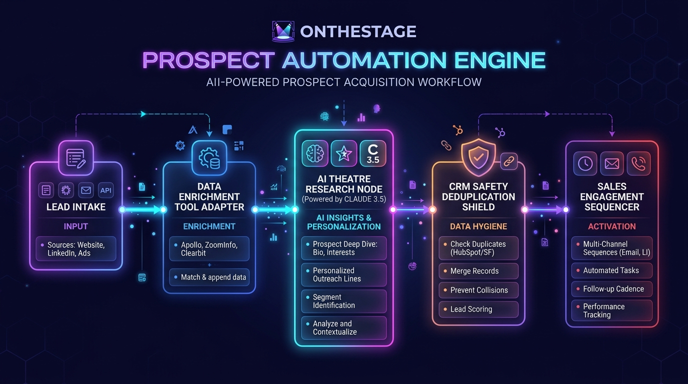

An end-to-end outbound workflow that ingests lead lists or discovers ICP targets, enriches contacts using your tool of choice, investigates upcoming theatre productions, and sends personalized pain-point messaging directly on behalf of OnTheStage SDRs.
From raw lead trigger to outreach dispatch on behalf of your sales reps.
Trigger the workflow in one of two ways:
The company list is pushed to your tool of choice (Clay, Amplemarket, ZoomInfo, Apollo, etc.) with pre-set ICP filters to pull verified contacts:
The engine runs automated web research on the school/theatre and the prospect to gather live context:
The system synthesizes the research into a clear pain point hypothesis:
Claude drafts natural, personalized outreach based directly on the identified pain point, written on behalf of the assigned SDR:
The verified contact, company data, and custom messaging are automatically synced:
A unified flow connecting intake, data enrichment, AI research, CRM safety shields, and outreach.

How each node in the n8n automation engine operates under the hood.
How it works: Runs on a daily schedule (e.g. 2:00 AM) to process fresh outbound batches, or triggers on-demand via webhook when an anonymous school visitor is identified on OnTheStage.com via RB2B or when a spreadsheet is uploaded.
How it works: Cleans raw input data, standardizes school and company domain names, removes unwanted characters, and sets ISO timestamps for seamless downstream processing.
How it works: Queries HubSpot and Salesforce by domain. If the school is already a paying customer, an open sales opportunity, or was recently contacted, it is automatically excluded to prevent duplicate messaging.
How it works: Queries your tool of choice (Clay, ZoomInfo, Apollo, Amplemarket) to find the specific individuals running the theatre department (Drama Teachers, Theatre Directors, Fine Arts Department Chairs) and validates email deliverability.
How it works: Reads the school's theatre department website, extracts upcoming show titles (e.g. "Mamma Mia!" or "Into the Woods"), identifies ticketing pain points, and writes a tailored 3-sentence email on behalf of the SDR using the Problem-Agitate-Solve framework.
How it works: Allows running the system in full automation or routing new drafts to Slack for a quick one-click approval by an SDR before anything is dispatched.
How it works: Creates or updates Contact and Organization records in HubSpot and Salesforce, logging the teacher's name, email, school, upcoming show title, and AI pain point summary for complete team visibility.
How it works: Enrolls the verified drama teacher directly into the appropriate sales cadence sent from the assigned SDR's email address, scheduling automatic multi-day follow-up touches.
How it works: Sends an alert into the sales team Slack channel showing the school name, teacher details, and drafted message whenever review is needed.
A look at an actual school lead moving through all 6 steps.
Lead Source: Texas High School Theatre Directory.
Contact Found: Sarah Jenkins — Fine Arts Director & Drama Teacher
Verified Email: sjenkins@westlakearts.org
Show Found: Into the Woods (Spring 2026, 750-seat auditorium).
Current Method: Cash in envelopes, manual paper seat charts.
Pain Point Summary: Director spends 20+ hours on ticket admin instead of rehearsals; no online reserved seating for parents.
Key details we need to confirm to tailor the build to your exact stack and sales structure.
Confirm whether HubSpot or Salesforce is your primary CRM for lead routing, deduplication, and pipeline tracking.
Confirm which tool SDRs use for email sending and cadences (e.g. HubSpot Sales Hub, Amplemarket, Smartlead, Outreach).
Confirm your preferred contact search and enrichment integration (e.g. Clay, Amplemarket, ZoomInfo, Apollo).
If you use Claude Code or Codex for creating skills, we can provide a simple custom skill so reps can upload a spreadsheet or trigger lead searches right from their prompt.
Understand how territories, school accounts, and inboxes are currently assigned to SDRs so emails send from the right person.
Decide whether to run in full-automation mode or have a lightweight Slack review queue where reps can review generated copy before dispatch.
A structured 4-phase rollout to build, test, and scale the engine.
Confirm CRM, outreach tool, and enrichment connectors. Map SDR inbox routing, territory splits, and custom CRM fields.
Connect data tools, set up web research logic, and tune the Claude 3.5 Sonnet pain-point prompt for performing arts messaging.
Run a small pilot batch with 1–2 SDRs. Review copy quality, check email deliverability, and adjust based on rep feedback.
Roll out across the full GTM team. Turn on daily automated runs and start sending high-converting emails on behalf of all SDRs.